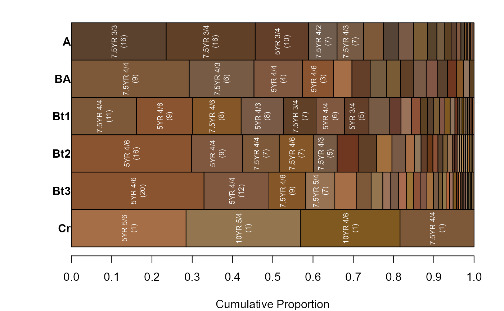

aggregateColorPlot.RdGenerate a plot from summaries generated by aqp::aggregateColor().
aggregateColorPlot(x, print.label=TRUE, label.font = 1, label.cex = 0.65, buffer.pct = 0.02, print.n.hz=FALSE, rect.border='black', horizontal.borders=FALSE, horizontal.border.lwd=2, x.axis=TRUE, y.axis=TRUE, ...)
| x | a list, results from |
|---|---|
| print.label | print Munsell color labels inside of rectangles, when they fit |
| label.font | font specification for color labels |
| label.cex | font size for color lables |
| buffer.pct | extra space between labels and color rectangles |
| print.n.hz | optionally print the number of horizons |
| rect.border | color for rectangle border |
| horizontal.borders | optionally add horizontal borders between bands of color |
| horizontal.border.lwd | line width for horizontal borders |
| x.axis | logical: add a scale and label to x-axis? |
| y.axis | logical: add group labels to y-axis? |
| ... | additional arguments passed to plot |
Tutorial at http://ncss-tech.github.io/AQP/sharpshootR/aggregate-soil-color.html.
D.E. Beaudette
# \donttest{ if(requireNamespace("curl") & curl::has_internet() & require(aqp) & require(soilDB)) { data(loafercreek, package = 'soilDB') # generalize horizon names using REGEX rules n <- c('Oi', 'A', 'BA','Bt1','Bt2','Bt3','Cr','R') p <- c('O', '^A$|Ad|Ap|AB','BA$|Bw', 'Bt1$|^B$','^Bt$|^Bt2$','^Bt3|^Bt4|CBt$|BCt$|2Bt|2CB$|^C$','Cr','R') loafercreek$genhz <- generalize.hz(loafercreek$hzname, n, p) # remove non-matching generalized horizon names loafercreek$genhz[loafercreek$genhz == 'not-used'] <- NA loafercreek$genhz <- factor(loafercreek$genhz) # aggregate color data, this function is from the `aqp` package a <- aggregateColor(loafercreek, 'genhz') # plot par(mar=c(4,4,1,1)) aggregateColorPlot(a, print.n.hz = TRUE) }#>#>#> #>#> #> #>#># }